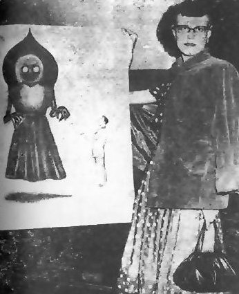
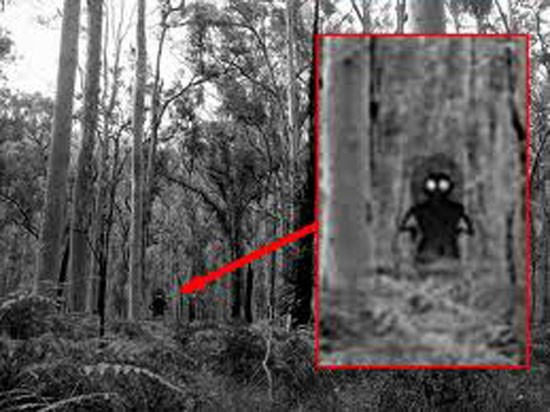
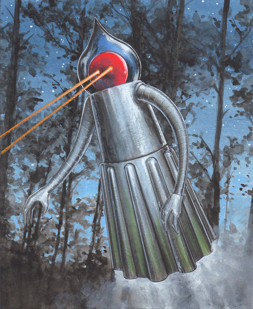

At 7:15 p.m. on September 12, 1952, two brothers, Edward and Fred May, and their friend Tommy Hyer (ages 13, 12, and 10 respectively) witnessed a bright object cross the sky, coming to rest on land belonging to local farmer G. Bailey Fisher. Upon witnessing the object, the boys went to the home of the May brothers' mother, Kathleen May, where they told the story of having seen a UFO crash land in the hills. From there, Mrs. May, accompanied by the three boys, local children Neil Nunley (14) and Ronnie Shaver (10), and 17-year-old West Virginia National Guardsman Eugene Lemon, traveled to the Fisher farm in an effort to locate whatever it was that the boys had seen.
Lemon's dog ran ahead out of sight and suddenly began barking, and moments later ran back to the group with its tail between its legs. After traveling about 0.25 miles (402 m) the group reached the top of a hill, where they reportedly saw a large pulsating "ball of fire" about 50 feet (15 m) to their right. They also detected a pungent mist that made their eyes and noses burn. Lemon then noticed two small lights over to the left of the object, underneath a nearby oak tree and directed his flashlight towards them, revealing the creature, which May reported as bounding towards them. Other sources describe it as emitting a shrill hissing noise before gliding towards them, changing direction and then heading off towards the red light. At this point the group fled in panic.
Upon returning home, Mrs. May contacted local Sheriff Robert Carr and Mr. A. Lee Stewert, co-owner of the Braxton Democrat, a local newspaper. Stewert conducted a number of interviews and returned to the site with Lemon later that night, where he reported that "there was a sickening, burnt, metallic odor still prevailing". Sheriff Carr and his deputy Burnell Long searched the area separately, but reported finding no trace of the encounter other than the smell. Early the next morning, Stewert visited the site of the encounter for a second time and discovered two elongated tracks in the mud, as well as traces of a thick black liquid. He immediately reported them as being possible signs of a saucer landing, based on the premise that the area had not been subjected to vehicle traffic for at least a year. It was later revealed that the tracks were likely to have been those of a 1942 Chevrolet pickup truck driven by local Max Lockard, who had gone to the site to look for the creature some hours prior to Stewert's discovery.
After the event, Mr. William and Donna Smith, investigators associated with Civilian Saucer Investigation, LA, obtained a number of accounts from witnesses who claimed to have experienced a similar or related phenomena. These accounts included the story of a mother and her 21-year-old-daughter, who claimed to have encountered a creature with the same appearance and odor a week prior to the September 12 incident. The encounter reportedly affected the daughter so badly that she was confined to Clarksburg Hospital for three weeks. They also gathered a statement from the mother of Eugene Lemon, in which she said that, at the approximate time of the crash, her house had been violently shaken and her radio had cut out for 45 minutes, and a report from the director of the local Board of Education in which he claimed to have seen a flying saucer taking off at 6:30 a.m. on September 13 (the morning after the creature was sighted).
After encountering the creature, several members of the September 12 group reported suffering from similar symptoms, which persisted for some time and which they attributed to having been exposed to the mist emitted by the creature. The symptoms included irritation of the nose and swelling of the throat. Lemon suffered from vomiting and convulsions throughout the night, and had difficulties with his throat for several weeks afterward. A doctor who treated several of the witnesses is reported to have described their symptoms as being similar to victims of mustard gas, though such symptoms are also commonly found in sufferers of hysteria, which can be brought on by exposure to a traumatic or shocking event.
  